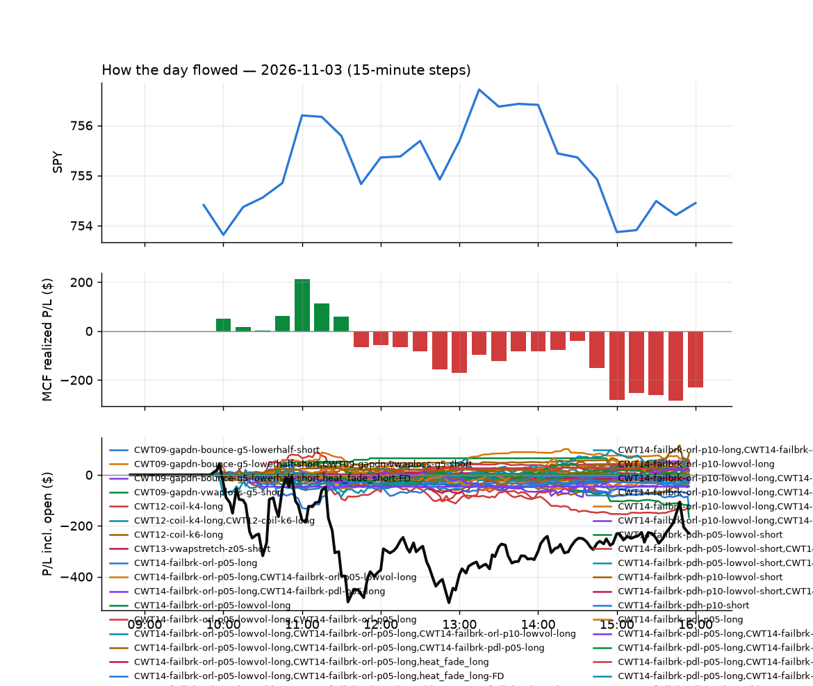
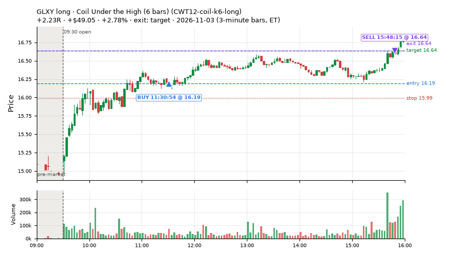
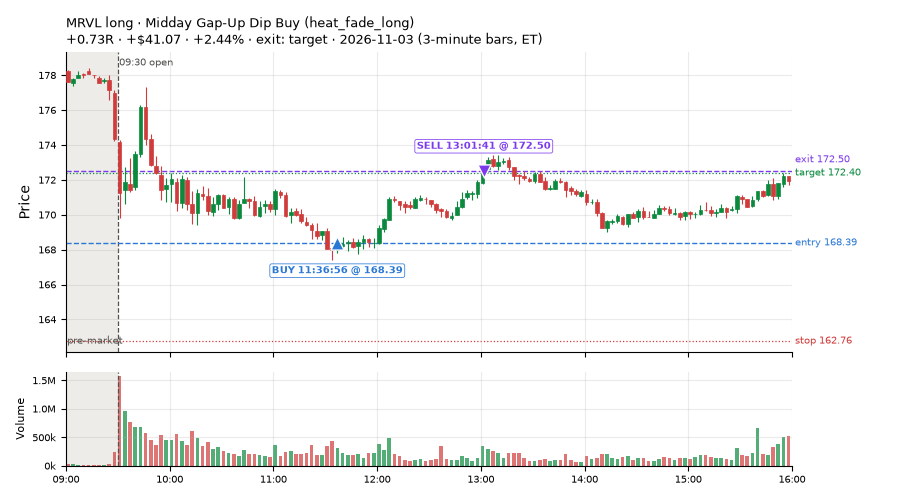
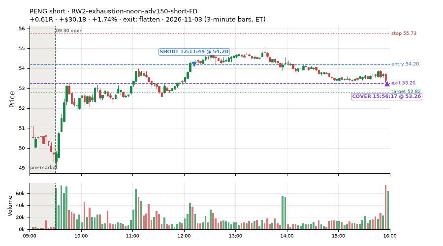
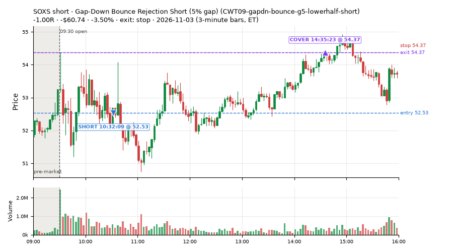
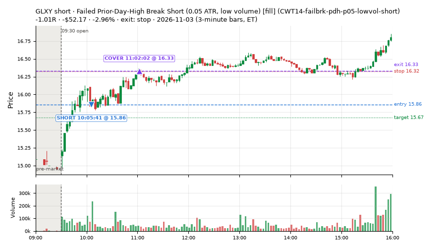
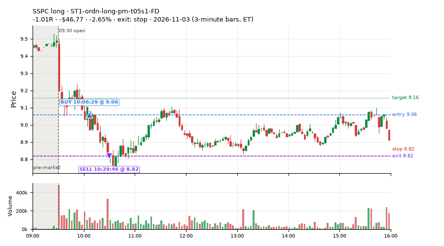
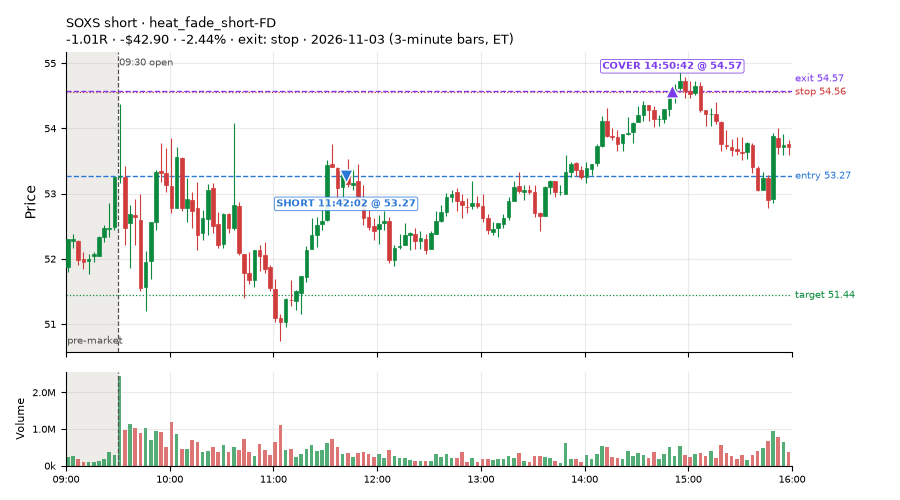
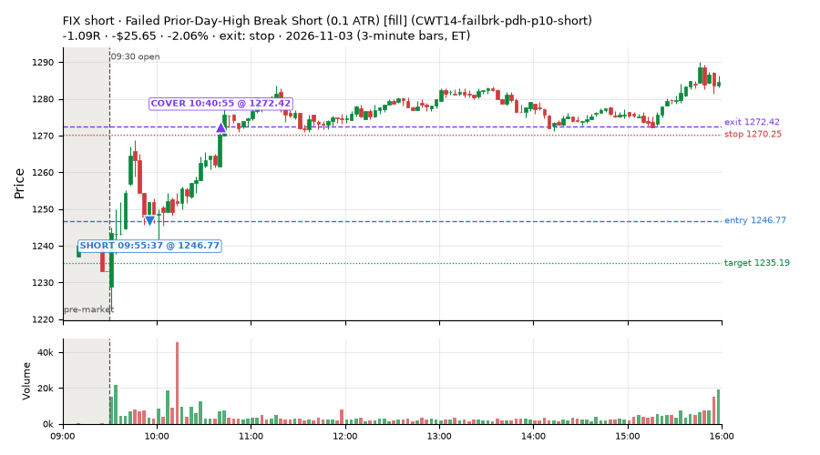

422 trades · win rate 58% · P/L $-229.19
PROBATION: no live setup has passed both locked test periods. 10 owner-directed setups added 2026-10-08 (MarcoFlow top 5 + 5 new), untested live. RW6G1 (RW6 + VWAP band guard) added 2026-10-09, probation.

| Symbol | Setup | Side | In | Out | Entry | Exit | Exit reason | % gained | P/L |
|---|---|---|---|---|---|---|---|---|---|
| GLXY | Coil Under the High (6 bars) (CWT12-coil-k6-long) | long | 11:30 | 15:48 | 16.19 | 16.64 | target | +2.78% | $49.05 |
| MRVL | Midday Gap-Up Dip Buy (heat_fade_long) | long | 11:36 | 13:01 | 168.39 | 172.50 | target | +2.44% | $41.07 |
| PENG | RW2-exhaustion-noon-adv150-short-FD | short | 12:11 | 15:56 | 54.20 | 53.26 | flatten | +1.74% | $30.18 |
| Symbol | Setup | Side | In | Out | Entry | Exit | Exit reason | % lost | P/L |
|---|---|---|---|---|---|---|---|---|---|
| SOXS | CWT09-gapdn-bounce-g5-lowerhalf-short | short | 10:32 | 14:35 | 52.53 | 54.37 | stop | -3.50% | $-60.74 |
| GLXY | CWT14-failbrk-pdh-p05-lowvol-short | short | 10:05 | 11:02 | 15.86 | 16.33 | stop | -2.96% | $-52.17 |
| SSPC | ST1-ordn-long-pm-t05s1-FD | long | 10:06 | 10:29 | 9.06 | 8.82 | stop | -2.65% | $-46.77 |
| SOXS | heat_fade_short-FD | short | 11:42 | 14:50 | 53.27 | 54.57 | stop | -2.44% | $-42.90 |
| FIX | CWT14-failbrk-pdh-p10-short | short | 09:55 | 10:40 | 1246.77 | 1272.42 | stop | -2.06% | $-25.65 |








Signal to fill: median 2s, 90th percentile 4s (422 trades). Bars close each minute; the order follows the bar close.
Best excursion (MFE): median 0.46R; worst (MAE) median 0.51R. 29% of trades never got +0.25R in our favour; 2 reached +1R and still closed at or below 0.
| Symbol | Setup | Best R | Worst R | Closed R |
|---|---|---|---|---|
| IWB | MF1-945-flowsell-vwapup-FD | +1.14 | -1.07 | -1.03 |
| SOXS | heat_fade_short-FD | +1.07 | -1.01 | -1.01 |
| SOXS | CWT09-gapdn-bounce-g5-lowerhalf-short | +0.97 | -1.03 | -1.00 |
| NDAQ | CWT12-coil-k6-long | +0.75 | -1.08 | -1.14 |
| ADI | heat_fade_short | +0.76 | -1.02 | -1.08 |
| Entry time | Trades | Win | Avg R | P/L |
|---|---|---|---|---|
| 09:50-10:30 | 145 | 53% | -0.20 | $-465.64 |
| 10:30-11:30 | 159 | 57% | -0.03 | $-41.90 |
| 11:30-13:00 | 72 | 61% | +0.04 | $113.97 |
| 13:00-14:00 | 28 | 68% | +0.13 | $72.80 |
| 14:00-16:00 | 18 | 72% | +0.23 | $91.58 |
| Setup | Trades | Win | Avg R | Adj R (net of SPY) | P/L |
|---|---|---|---|---|---|
| Gap-Down Bounce Rejection Short (5% gap) (CWT09-gapdn-bounce-g5-lowerhalf-short) | 2.0 | 0% | -0.75 | -0.74 | $-77.39 |
| Gap-Down VWAP Loss Short (5% gap) (CWT09-gapdn-vwaploss-g5-short) | 1.0 | 0% | -0.77 | -0.75 | $-13.53 |
| Coil Under the High (4 bars) (CWT12-coil-k4-long) | 49.0 | 55% | -0.25 | -0.28 | $-134.23 |
| Coil Under the High (6 bars) (CWT12-coil-k6-long) | 16.0 | 25% | -0.33 | -0.36 | $-43.77 |
| Stretched Above VWAP Fade (CWT13-vwapstretch-z05-short) | 2.0 | 100% | +0.93 | +0.51 | $18.12 |
| Failed Opening-Range-Low Break Long (0.05 ATR) [fill] (CWT14-failbrk-orl-p05-long) | 43.0 | 56% | -0.17 | -0.34 | $-126.65 |
| Failed Opening-Range-Low Break Long (0.05 ATR, low volume) [fill] (CWT14-failbrk-orl-p05-lowvol-long) | 41.0 | 44% | -0.28 | -0.39 | $-166.50 |
| Failed Opening-Range-Low Break Long (0.1 ATR) [fill] (CWT14-failbrk-orl-p10-long) | 13.0 | 54% | -0.07 | -0.07 | $-1.49 |
| Failed Opening-Range-Low Break Long (low volume) (CWT14-failbrk-orl-p10-lowvol-long) | 15.0 | 53% | -0.06 | -0.02 | $-6.32 |
| Failed Prior-Day-High Break Short (0.05 ATR, low volume) [fill] (CWT14-failbrk-pdh-p05-lowvol-short) | 14.0 | 79% | +0.11 | +0.08 | $-7.37 |
| Failed Prior-Day-High Break Short (low volume) (CWT14-failbrk-pdh-p10-lowvol-short) | 3.0 | 33% | -0.72 | -0.52 | $-20.03 |
| Failed Prior-Day-High Break Short (0.1 ATR) [fill] (CWT14-failbrk-pdh-p10-short) | 5.0 | 20% | -0.53 | -0.37 | $-32.50 |
| Failed Prior-Day-Low Break Long (shallow) (CWT14-failbrk-pdl-p05-long) | 61.0 | 70% | +0.02 | -0.10 | $54.82 |
| Failed Prior-Day-Low Break Long (0.05 ATR, low volume) [fill] (CWT14-failbrk-pdl-p05-lowvol-long) | 33.0 | 67% | +0.00 | -0.08 | $15.47 |
| Opening-Range Low Sweep Reversal (LIQ-orl-sweep-open15-s25-long) | 4.0 | 25% | -0.41 | -0.21 | $-19.31 |
| MF1-945-flowsell-vwapup-FD | 7.0 | 14% | -0.57 | -0.44 | $-6.60 |
| Early Sellers into a Pop (all day) (MF3-open-flowsell-rsi5hi-FD) | 13.0 | 69% | +0.44 | +0.34 | $57.62 |
| MF5-flowsell-vwapup-rsi5hi-FD | 11.0 | 73% | +0.48 | +0.43 | $52.09 |
| NS2-sma50break-overbought-short-FD | 13.0 | 54% | +0.16 | +0.06 | $41.24 |
| RW2-exhaustion-noon-adv150-short-FD | 11.0 | 55% | +0.03 | -0.04 | $22.42 |
| RW6-ns2-up3-short-FD | 5.0 | 60% | +0.46 | +0.34 | $41.76 |
| ST1-ordn-long-pm-t05s1-FD | 1.0 | 0% | -1.01 | -1.08 | $-46.77 |
| ST2-slope20up-long-am-t05s1-FD | 6.0 | 67% | +0.07 | +0.18 | $43.84 |
| Midday Gap-Up Dip Buy (heat_fade_long) failed Apr-Jun holdout: -0.138R/trade over 1043 trades | 5.0 | 80% | +0.19 | +0.27 | $55.98 |
| heat_fade_long-FD | 11.0 | 91% | +0.32 | +0.28 | $81.42 |
| Morning Bounce Fade (heat_fade_short) failed Apr-Jun holdout: -0.015R/trade over 1420 trades | 10.0 | 50% | -0.27 | -0.21 | $-29.76 |
| heat_fade_short-FD | 27.0 | 67% | +0.23 | -0.02 | $18.25 |
Market direction (SPY, beta 1) accounted for $180.78 of today's $-229.19; the rest ($-409.97) came from the setups themselves. Avg R net of SPY: -0.13 (incl. a hedge leg's cost; report only).
30 setups live today. Today: 835 signals, 422 taken, 61 lost because another setup held the symbol (7%). Since 2026-10-21 (10 sessions): 8159 signals, 3364 taken, 470 lost to other setups (6%). Peak open positions today 166 of 200 slots. Earnings blackout removed 1841 symbols before scanning.
Simulated playing time (not live): 4776 what-if trades of signals not taken, avg -0.08R, 55% winners; of them 470 lost to another setup (avg -0.12R).
Crowded out: NS2-sma50break-overbought-short, heat_fade_long-FD · Starved: MF1-945-flowsell-vwapup-FD, heat_fade_long, heat_fade_short-FD
| Prio | Setup | Today sig / taken | Sessions | Signals / taken / trades | Taken/day | Expected/day | Lost to other setups | Lost to (setup n) | Top skip reasons | SIMULATED: not-taken n / avg R / win | Verdict |
|---|---|---|---|---|---|---|---|---|---|---|---|
| 1 | ST1-ordn-long-pm-t05s1-FD ST1-ordn-long-pm-t05s1-FD | 1 / 1 | 10 | 17 / 11 / 11 | 1.10 | 3.49 | 0 | – | spread / quote / size 5, broker rejected 1 | 6 / -0.32R / 33% | slow 5.5 entries/week; ~11 weeks to 60 trades |
| 2 | RW6-ns2-up3-short-FD RW6-ns2-up3-short-FD | 9 / 5 | 10 | 67 / 29 / 29 | 2.90 | 7.12 | 6 | CWT12-coil-k4-long 3, LIQ-orl-sweep-open15-s25-long 2, CWT09-gapdn-bounce-g5-lowerhalf-short 1 | not shortable / shorts off 18, daily loss cap 9, symbol held by another setup 6 | 38 / +0.48R / 82% | slow 14.5 entries/week; ~4 weeks to 60 trades |
| 3 | NS2-sma50break-overbought-short-FD NS2-sma50break-overbought-short-FD | 21 / 13 | 10 | 121 / 64 / 64 | 6.40 | 17.08 | 7 | CWT12-coil-k4-long 6, LIQ-orl-sweep-open15-s25-long 1 | daily loss cap 19, not shortable / shorts off 17, spread / quote / size 14 | 57 / +0.32R / 68% | ok 32.0 entries/week |
| 4 | Big Gainer Average Reclaim Fade NS2-sma50break-overbought-short | 13 / 0 | 10 | 61 / 6 / 6 | 0.60 | 5.74 | 37 | NS2-sma50break-overbought-short-FD 32, RW6-ns2-up3-short-FD 9, CWT12-coil-k4-long 4 | symbol held by another setup 37, not shortable / shorts off 9, spread / quote / size 9 | 55 / +0.17R / 64% | crowded-out 37 of 61 signals (61%) lost to setups already holding the symbol |
| 5 | MF1-945-flowsell-vwapup-FD MF1-945-flowsell-vwapup-FD | 31 / 7 | 10 | 134 / 47 / 47 | 4.70 | 23.94 | 2 | CWT12-coil-k6-long 1, CWT14-failbrk-orl-p05-long 1 | daily loss cap 45, spread / quote / size 29, not shortable / shorts off 11 | 87 / +0.03R / 41% | starved 4.70 entries/day vs ~23.94 expected |
| 6 | ST2-slope20up-long-am-t05s1-FD ST2-slope20up-long-am-t05s1-FD | 8 / 6 | 10 | 121 / 91 / 91 | 9.10 | 24.03 | 11 | heat_fade_short-FD 9, heat_fade_short 1, CWT09-gapdn-bounce-g5-lowerhalf-short 1 | spread / quote / size 17, symbol held by another setup 11, daily loss cap 2 | 30 / +0.06R / 67% | ok 45.5 entries/week |
| 7 | Midday Gap-Up Dip Buy heat_fade_long | 5 / 5 | 10 | 81 / 49 / 49 | 4.90 | 30.36 | 12 | heat_fade_long-FD 7, heat_fade_short-FD 2, heat_fade_short 2 | daily loss cap 15, symbol held by another setup 12, spread / quote / size 5 | 32 / -0.45R / 28% | starved 4.90 entries/day vs ~30.36 expected |
| 8 | Opening-Range Low Sweep Reversal LIQ-orl-sweep-open15-s25-long | 8 / 4 | 10 | 152 / 107 / 107 | 10.70 | – | 10 | CWT14-failbrk-orl-p10-long 9, CWT14-failbrk-orl-p05-lowvol-long 9, CWT14-failbrk-orl-p10-lowvol-long 8 | spread / quote / size 19, symbol held by another setup 10, per-setup cap 6 | 45 / -0.14R / 44% | ok 53.5 entries/week |
| 9 | RW2-exhaustion-noon-adv150-short-FD RW2-exhaustion-noon-adv150-short-FD | 14 / 11 | 10 | 386 / 175 / 175 | 17.50 | 50.34 | 9 | CWT12-coil-k4-long 5, CWT14-failbrk-orl-p10-lowvol-long 1, CWT14-failbrk-orl-p10-long 1 | daily loss cap 106, not shortable / shorts off 56, spread / quote / size 35 | 211 / -0.12R / 46% | ok 87.5 entries/week |
| 10 | heat_fade_long-FD heat_fade_long-FD | 19 / 11 | 10 | 166 / 70 / 70 | 7.00 | 51.74 | 44 | heat_fade_long 39, heat_fade_short-FD 2, heat_fade_short 2 | symbol held by another setup 44, spread / quote / size 27, daily loss cap 25 | 96 / -0.17R / 44% | crowded-out 44 of 166 signals (27%) lost to setups already holding the symbol |
| 11 | Failed Opening-Range-Low Break Long (low volume) CWT14-failbrk-orl-p10-lowvol-long | 20 / 15 | 10 | 390 / 235 / 235 | 23.50 | – | 5 | CWT14-failbrk-pdh-p05-lowvol-short 3, CWT14-failbrk-orl-p05-long 2, CWT14-failbrk-pdh-p10-short 2 | daily loss cap 70, spread / quote / size 58, per-setup cap 17 | 153 / -0.04R / 67% | ok 117.5 entries/week |
| 12 | Failed Opening-Range-Low Break Long (0.1 ATR) [fill] CWT14-failbrk-orl-p10-long | 19 / 13 | 10 | 478 / 260 / 260 | 26.00 | – | 10 | CWT14-failbrk-orl-p05-lowvol-long 7, CWT14-failbrk-orl-p05-long 7, CWT14-failbrk-orl-p10-lowvol-long 6 | daily loss cap 99, spread / quote / size 69, per-setup cap 32 | 216 / -0.12R / 62% | ok 130.0 entries/week |
| 13 | Morning Bounce Fade heat_fade_short | 13 / 10 | 10 | 195 / 96 / 96 | 9.60 | 31.76 | 0 | – | spread / quote / size 53, daily loss cap 32, not shortable / shorts off 12 | 99 / +0.09R / 54% | ok 48.0 entries/week |
| 14 | Failed Opening-Range-Low Break Long (0.05 ATR, low volume) [fill] CWT14-failbrk-orl-p05-lowvol-long | 57 / 41 | 10 | 922 / 407 / 407 | 40.70 | – | 14 | CWT14-failbrk-orl-p10-lowvol-long 5, CWT14-failbrk-orl-p10-long 5, CWT14-failbrk-orl-p05-long 4 | daily loss cap 254, per-setup cap 137, spread / quote / size 100 | 512 / -0.10R / 63% | ok 203.5 entries/week |
| 15 | heat_fade_short-FD heat_fade_short-FD | 52 / 27 | 10 | 601 / 234 / 234 | 23.40 | 173.78 | 137 | heat_fade_short 97, LIQ-orl-sweep-open15-s25-long 11, CWT14-failbrk-orl-p05-long 9 | symbol held by another setup 137, daily loss cap 92, spread / quote / size 82 | 367 / -0.01R / 49% | starved 23.40 entries/day vs ~173.78 expected |
| 16 | Failed Opening-Range-Low Break Long (0.05 ATR) [fill] CWT14-failbrk-orl-p05-long | 79 / 43 | 10 | 1309 / 486 / 486 | 48.60 | – | 103 | CWT14-failbrk-orl-p10-lowvol-long 83, CWT14-failbrk-orl-p10-long 83, CWT14-failbrk-orl-p05-lowvol-long 81 | daily loss cap 359, per-setup cap 199, spread / quote / size 150 | 821 / -0.12R / 61% | ok 243.0 entries/week |
| 17 | Gap-Down Bounce Rejection Short (5% gap) CWT09-gapdn-bounce-g5-lowerhalf-short | 19 / 2 | 10 | 367 / 70 / 70 | 7.00 | – | 4 | CWT12-coil-k4-long 3, CWT12-coil-k6-long 1, CWT14-failbrk-orl-p05-long 1 | not shortable / shorts off 213, per-setup cap 32, spread / quote / size 27 | 296 / +0.21R / 54% | ok 35.0 entries/week |
| 18 | Failed Prior-Day-High Break Short (0.05 ATR, low volume) [fill] CWT14-failbrk-pdh-p05-lowvol-short | 27 / 14 | 9 | 489 / 162 / 162 | 18.00 | – | 5 | CWT14-failbrk-orl-p10-long 4, CWT14-failbrk-orl-p05-long 3, CWT14-failbrk-orl-p10-lowvol-long 2 | daily loss cap 194, spread / quote / size 93, not shortable / shorts off 31 | 327 / -0.03R / 65% | ok 90.0 entries/week |
| 19 | Failed Prior-Day-High Break Short (low volume) CWT14-failbrk-pdh-p10-lowvol-short | 11 / 3 | 9 | 194 / 89 / 89 | 9.89 | – | 2 | CWT14-failbrk-orl-p10-long 2, CWT14-failbrk-orl-p05-long 2 | spread / quote / size 54, daily loss cap 34, not shortable / shorts off 12 | 105 / -0.02R / 68% | ok 49.4 entries/week |
| 20 | Failed Prior-Day-High Break Short (0.1 ATR) [fill] CWT14-failbrk-pdh-p10-short | 19 / 5 | 8 | 323 / 143 / 143 | 17.88 | – | 6 | CWT14-failbrk-pdh-p05-lowvol-short 3, CWT14-failbrk-pdh-p10-lowvol-short 3, CWT14-failbrk-orl-p10-long 3 | spread / quote / size 74, daily loss cap 57, not shortable / shorts off 24 | 180 / -0.06R / 63% | ok 89.4 entries/week |
| 21 | Stretched Above VWAP Fade CWT13-vwapstretch-z05-short | 8 / 2 | 8 | 115 / 65 / 65 | 8.12 | – | 2 | LIQ-orl-sweep-open15-s25-long 1, CWT12-coil-k4-long 1 | daily loss cap 17, spread / quote / size 15, not shortable / shorts off 14 | 50 / -0.02R / 46% | ok 40.6 entries/week |
| 22 | Gap-Down VWAP Loss Short (5% gap) CWT09-gapdn-vwaploss-g5-short | 22 / 1 | 7 | 370 / 37 / 37 | 5.29 | – | 2 | CWT14-failbrk-orl-p05-lowvol-long 1, CWT14-failbrk-orl-p05-long 1 | not shortable / shorts off 226, per-setup cap 54, spread / quote / size 31 | 327 / -0.32R / 32% | ok 26.4 entries/week |
| 23 | Coil Under the High (6 bars) CWT12-coil-k6-long | 42 / 16 | 6 | 252 / 77 / 77 | 12.83 | – | 16 | heat_fade_short 5, CWT14-failbrk-pdh-p10-short 4, CWT14-failbrk-pdh-p05-lowvol-short 3 | daily loss cap 88, spread / quote / size 56, symbol held by another setup 16 | 175 / -0.20R / 35% | ok 64.2 entries/week |
| 24 | Coil Under the High (4 bars) CWT12-coil-k4-long | 121 / 49 | 4 | 438 / 169 / 169 | 42.25 | – | 14 | RW2-exhaustion-noon-adv150-short-FD 4, CWT14-failbrk-pdh-p05-lowvol-short 2, heat_fade_short 2 | per-setup cap 194, spread / quote / size 41, broker rejected 19 | 268 / -0.32R / 48% | ok 211.2 entries/week |
| 25 | Failed Prior-Day-Low Break Long (shallow) CWT14-failbrk-pdl-p05-long | 83 / 61 | 3 | 193 / 89 / 89 | 29.67 | – | 2 | CWT14-failbrk-orl-p10-lowvol-long 2, CWT14-failbrk-orl-p10-long 2, CWT14-failbrk-orl-p05-lowvol-long 2 | daily loss cap 59, spread / quote / size 38, broker rejected 4 | 103 / -0.17R / 57% | ok 148.3 entries/week |
| 26 | Failed Prior-Day-Low Break Long (0.05 ATR, low volume) [fill] CWT14-failbrk-pdl-p05-lowvol-long | 51 / 33 | 3 | 114 / 63 / 63 | 21.00 | – | 7 | CWT14-failbrk-orl-p05-lowvol-long 7, CWT14-failbrk-orl-p05-long 5, CWT14-failbrk-pdl-p05-long 5 | spread / quote / size 25, daily loss cap 14, symbol held by another setup 7 | 50 / -0.05R / 66% | ok 105.0 entries/week |
| 27 | Big Loser VWAP Reclaim Fade (all day) NS3-failed-vwap-reclaim-short-FD | 4 / 0 | 2 | 28 / 4 / 4 | 2.00 | 22.02 | 1 | ST2-slope20up-long-am-t05s1-FD 1 | not shortable / shorts off 14, daily loss cap 5, spread / quote / size 4 | 24 / +0.37R / 71% | watch 2.00 entries/day vs ~22.02 expected |
| 28 | RW4-ns3-adv150-short-FD RW4-ns3-adv150-short-FD | 2 / 0 | 2 | 18 / 5 / 5 | 2.50 | 17.34 | 2 | ST2-slope20up-long-am-t05s1-FD 1, NS3-failed-vwap-reclaim-short-FD 1, RW4-ns3-adv150-short-FD 1 | not shortable / shorts off 6, spread / quote / size 5, symbol held by another setup 2 | 13 / +0.19R / 62% | watch 2.50 entries/day vs ~17.34 expected |
| 29 | Early Sellers into a Pop (all day) MF3-open-flowsell-rsi5hi-FD | 33 / 13 | 1 | 33 / 13 / 13 | 13.00 | 24.16 | 0 | – | daily loss cap 11, broker rejected 6, not shortable / shorts off 3 | 20 / +0.56R / 80% | ok 65.0 entries/week |
| 30 | MF5-flowsell-vwapup-rsi5hi-FD MF5-flowsell-vwapup-rsi5hi-FD | 24 / 11 | 1 | 24 / 11 / 11 | 11.00 | 15.47 | 0 | – | broker rejected 8, daily loss cap 5 | 13 / +0.69R / 100% | ok 55.0 entries/week |
Every trade is attached as a CSV you can open and edit in Excel or Google Sheets. Live page: https://misiti15.github.io/MCF/live/